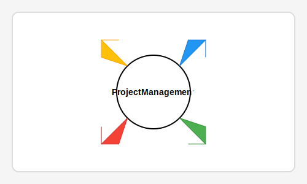

Week 6: 3D Scanning and Printing
Week 6 focused on 3D scanning and printing technologies, which are powerful tools for creating custom three-dimensional objects. These technologies enable us to both digitize physical objects and materialize digital designs, opening up numerous possibilities for prototyping and production.
Key Learning Outcomes
- Understanding various 3D scanning technologies: laser, structured light, and photogrammetry
- Learning the principles and processes of FDM (Fused Deposition Modeling) 3D printing
- Preparing 3D models for printing: slicing, support generation, and printer settings
- Exploring different materials for 3D printing and their properties
- Post-processing techniques for 3D printed objects
Equipment Used
- Prusa i3 MK3S+ 3D printer for fabricating designs
- Structure Sensor for 3D scanning
- DSLR camera for photogrammetry
- PLA, PETG, and TPU filaments for different printing applications
Assignment Deliverables
For this assignment, I had to:
- Design and 3D print an object that couldn't be made with subtractive manufacturing
- 3D scan an object and process the resulting mesh
- Document the design considerations, printing parameters, and challenges encountered
- Compare different scanning methods and evaluate their accuracy
My Projects
3D Printed Component: Solar Panel Mount
I designed and printed a custom mounting bracket for small solar panels that includes internal channels for wiring and an adjustable angle mechanism. This design demonstrates the advantages of 3D printing for creating complex geometries that would be difficult or impossible to produce using traditional manufacturing methods.
3D Scanning Exercise
I used photogrammetry to scan a traditional clay oil lamp from Rajasthan. By taking multiple photographs from different angles and using specialized software, I was able to create a digital 3D model of the lamp. This process demonstrated how traditional crafts can be digitized and potentially integrated with modern fabrication techniques.
Challenges and Solutions
One significant challenge was optimizing the print settings to ensure structural strength while minimizing material usage. I experimented with different infill patterns and densities to find the optimal balance between strength and material efficiency.
Another challenge was capturing fine details during the scanning process. I improved the results by ensuring proper lighting conditions and taking a larger number of overlapping photographs to provide more data points for the reconstruction algorithm.
Reflection
3D scanning and printing technologies offer tremendous potential for my work at Barefoot College, especially for creating custom components for solar installations. The ability to digitize traditional objects also opens up possibilities for preserving and adapting cultural artifacts in new contexts.
I'm particularly excited about the potential of combining 3D printing with the electronics production skills learned in previous weeks to create integrated devices with both structural and electronic components.